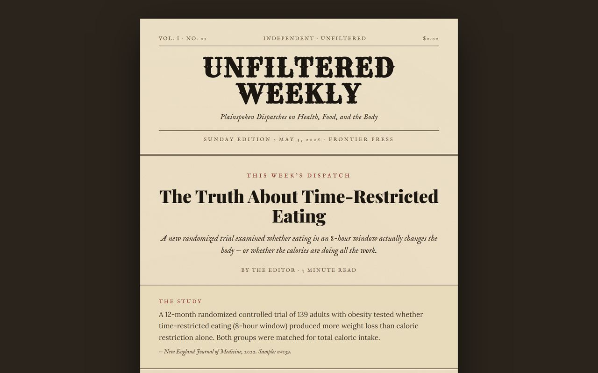

AI AUTOMATION · TORONTO
Take the repetitive admin off your team.
I build AI automations, agents and internal tools for small businesses, with human approval built in so nothing runs unchecked.
Including private, on-premise and hybrid AI for teams who can’t send sensitive data to the cloud.
Free 30-minute call. You get a one-page plan, no pitch deck.
(01) The problem
Your team is losing hours to work a system could do.
-
Chasing documents
Clients send things late, incomplete or to the wrong inbox, and someone follows up by hand.
-
Re-keying data
The same information gets typed into email, spreadsheets, CRM and accounting software.
-
Rebuilding reports
Every week or month, someone rebuilds the same report from scratch.
(02) Services
What I build
-
Workflow automations
Connect your email, forms, spreadsheets, CRM and accounting tools so data moves on its own.
-
AI agents and assistants
Tools that read, draft, classify and reason, using Claude, Gemini and OpenAI models, with memory and retrieval over your own documents.
-
Internal tools and dashboards
Simple web apps your team actually uses, built on Firebase, Supabase and modern web stacks.
-
Monitoring and alerts
Pipelines that watch your data, flag what changed and alert the right person.
-
AI search visibility (AEO)
Help ChatGPT, Gemini and Perplexity understand and recommend your business.
-
Private & on-premise AI
For teams who can’t send sensitive data to the cloud.
I run open-source AI models on your own servers, so sensitive data never leaves your network. For most teams I use a hybrid setup — private data stays local, and only non-sensitive work goes to a cloud model when it needs more power.
- On your infrastructure: open-source models (Llama, Mistral and similar) running on servers or a private cloud you control.
- Hybrid by design: sensitive data is processed locally; heavier reasoning uses a cloud model only on data that’s safe to send.
- You stay in control: full logging, human approval on sensitive steps, and you own every model, key and workflow.
Common first projects: client document intake, invoice and payment reminders, data entry between systems, recurring reports, inbox triage, onboarding checklists.
(03) Process
How it works
-
Free Automation Audit
A 30-minute call to map where your team's hours go. You get a one-page plan showing what's worth automating and what isn't.
-
Build
I build one or two workflows that save real hours, with human approval wherever it matters. Fixed scope, fixed price.
-
Monitor and support
Documentation, monitoring and ongoing support, so you always know what's running and what it's doing.
My rule: a broken automation is worse than none. Every system I build includes approval steps, logging and a clear way to turn it off.
(04) Selected work
Things I've built
-
Illustration
Product concept · In validation
Thesis Pulse
A background agent that watches open positions and flags the moment the reason behind a trade stops holding. It turns a one-line thesis into signals to monitor, then sends a single alert with the source. Currently in design and validation.
-

End-to-end automation
Unfiltered Weekly
A fully automated content pipeline that scans sources, drafts with Claude and publishes only after a single approval tap. Built with Make.com, Zapier, Claude API and Buffer.
-
Illustration
AI agent · Long-term memory
Dexter
A personal AI second brain that sees, reasons and remembers. Claude handles both vision and reasoning, a local vector memory (SQLite and ChromaDB) stores long-term context, and ElevenLabs gives it a voice.
-
Illustration
In production · Team scale
Workplace automation at CDI College
Replaced manual month-end and tracking work for a student finance team with internal tools and automations the team used every day.
(05) About
Hi, I'm Kanish.
I spent two years in student finance at CDI College, handling OSAP, payments, funding documentation and month-end. Nobody hired me to automate anything. I did it because manual work was slowing my team down, and the tools I built became part of how the team worked every day.
Now I build the same kind of systems for small businesses in Toronto, especially accounting and bookkeeping firms, law offices, insurance and real estate brokerages, and clinics. I have a background in computer science and networking, and I understand the business side well enough to know what can't break.
A lot of businesses avoid AI because they can’t risk sensitive data leaving their systems. That’s the part I focus on most — private, on-premise and hybrid setups where the sensitive work runs on your own servers and you stay in control of everything.
Stack
- Make.com
- Zapier
- Claude
- OpenAI
- Gemini
- Python
- JavaScript
- Firebase
- Supabase
- Vercel
- HubSpot
- Google Workspace
- Microsoft 365
- Open-source LLMs
- Ollama
- vLLM
- Llama
- Mistral
(06) Questions
FAQ
Do I need to change the software we use?
Usually not. I connect the tools you already have. If something needs replacing, I'll tell you in the audit, before you spend anything.
Is our data safe?
Automations only get the access they need, sensitive steps keep a human approval, and you own every account and workflow I build. For data-sensitive teams, I can run open-source models on your own servers, so nothing sensitive ever leaves your network.
Can the AI run without sending our data to the cloud?
Yes. For sensitive environments I run open-source models directly on your own servers, so your data stays inside your network. Where more power is needed, I use a hybrid setup — private data stays local and only non-sensitive work is sent to a cloud model, with your approval. You decide what, if anything, ever leaves your systems.
How much does it cost?
The audit is free. Most builds are a fixed price agreed before any work starts, typically starting around $2,000 for one or two workflows. Ongoing support is a simple monthly fee.
How long does a build take?
Most first workflows go live in one to three weeks.
What if something breaks?
Every workflow has monitoring and alerts, and I fix issues as part of ongoing support.
Find out where your team's hours are going.
Book a free 30-minute Automation Audit. You'll leave with a one-page plan, whether or not we work together.
Or email me at Email